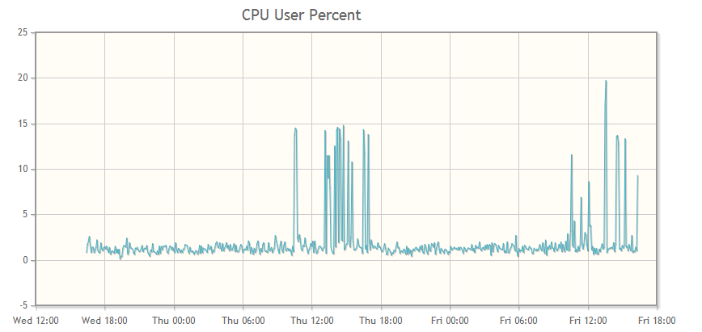
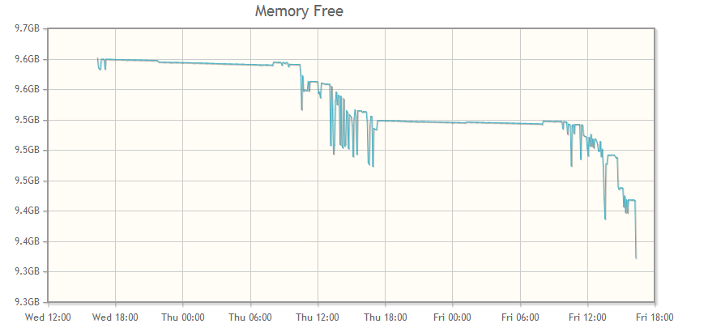

psmonitor
Monitor a server using psutil (python) + MongoDB + JavaScript for graphics
The data capture program runs in a cron job, inserting new data into a Mongodb capped collection.
When you load the psmonitor.html file, psmonitor.js is loaded.
The javascript makes an ajax call to get the appropriate data from Mongodb
and the data is graphed as a time series.
Requires
* mongodb installation
* pymongo python package
* psutil python package
* python 2.7
* jquery + jqplot
* web server to serve mongo data via ajax. (bottle example included)
Run psmonitor.py in a cron job, something like this to run every 5 minutes::
*/5 * * * * /usr/local/bin/python /usr/local/bin/psmonitor.py
Similar Projects
Screenshots
The following two screenshots are examples of the output from psmonitor. The complete list of charts, as configured:
- CPU User Percent
- CPU System Percent
- CPU IRQ
- CPU Nice Percent
- CPU Idle Percent
- Disk Free Space
- Memory Free Space
- AMD Process CPU Usage

